Class 3 Lecture Demonstration Lab: Latitude & Longitude; Decimal Numbers; Points in Polygons relationships; Calculating Density vs. Absolute Count.
Spring 2026 | UENV 3200 - CRN 11009 + UURB 3210 - CRN 111008
Preamble
In this third demonstration lab, we will conduct a series of exercises that will demonstrate key concepts that will be part of this week’s assignment:
- Part I: Latitude + Longitude in Digital Number Format | Google Maps + Open Street Map
- Part II: global scale - lat/lon | QGIS Interface
- Part III: FIRMS fire points - determining absolute counts vs geographic density
To follow, three graphics illustrate the positioning of points location via Latitude + Longitude:
Latitude + Longitude - Overview
- The ‘direction’ of Latitude & Longitude:

- Analogy to remember relationship of Latitude to Longitude:
 - Positioning/measurement of points via degrees:
- Positioning/measurement of points via degrees:

Part I: Latitude + Longitude in Digital Number Format | Google Maps + Open Street Map
- To start, download the following
.txtdocument entitledpoint_location.txt.
- Data Download LINK
Note: points location data is often available as both or either .txt or .csv formats. GIS software including QGIS can handle both formats with ease. In both formats, the various attributes per record are ‘separated’ or rather ‘delimited’ by a character - commonly a comma, tab or colon; and in the case of .csv, a comma, hence ‘comma separated values’.
- Depending on your operating system, a
.txtor.csvfile may open via various default programs, so which may not be most suitable for working with this file type for GIS purposes. Here we want to view and/or append with the least amount of extraneous formatting. Both Microsoft Word and Excel, while perfectly fine software products, are notorious for extraneous formatting utilized primarily by those software. Here is where a text editor comes into play. These editors tend to be lightweight, often open-source and/or freely available. While using a integrated development environment (IDE) is also valuable, to get started using a text editor alone is fine for viewing and working with Latitude + Longitude data.
For the purposes of this course, Sublime Text is recommended:
- Download Sublime Text for your machine’s OS HERE
- Once you have opened the
point_location.txtfile via your text editor, notice the top line1is different than the lines to follow. This first line serves the purpose of denoting the column (field) titles, whereas the data itself is organized on the subsequent lines2-5. In this particular text document, the second line represents the US capitol, a latitude and a longitude coordinate and a count value for the number of decimal places in the coordinate numbers. Lines3-5we see that the number of decimal places have been truncated down to1.
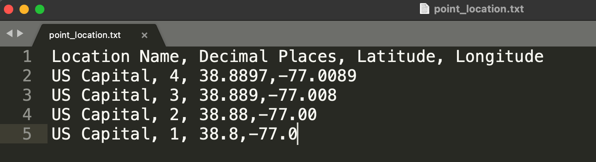
.txt file opened in Sublime Text- Next we will first open Google Maps in a browser and copy the line
2latitude and longitude coordinate pair alone into the search field. Google Maps recognizes this pairing in a similar fashion to how it recognizes an actual named geographic location and proceeds to placing a point on the map.
- Insert latitude and longitude coordinate pair into Google Maps:
38.8897,-77.0089
- Google Maps result:
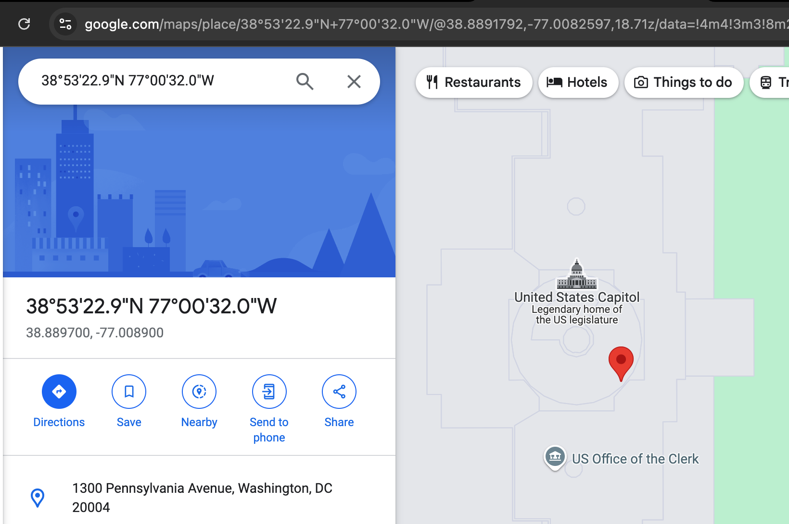
38.8897,-77.0089- Next we will place the same latitude and longitude coordinate pair via OpenStreetMap into its respective search field. Similar behavior results, and a point is placed onto the map.

38.8897,-77.0089Note: While the above steps may seem obvious, note that typically we use online mapping platforms via the search field by placing some named place or address first. Ordinarily, online mapping platforms then use a process known as geocoding to transform a given place name or address into a coordinate pair represented by a point on a map, often then giving the user options for what to do with that point - save it, direct to it, send to a phone, ect. Here we have superseded the typical geocoding process and have given both mapping platforms the coordinate pair alone.
- Next, open QGIS while ensuring the
point_location.txtis downloaded to a stable directory on your machine. Proceed to pointing QGIS to the.txtfile utilizing the Data Source Manager. Here delimited text has its own file type button. Carefully input the Latitude and Longitude aspoint coordinates; that is, we will use the two columns as the geometry attributes that are latitude and longitude to derive points. Note at this point that we can import.txtto QGIS even without geometry attributes, but only with geometry attributes do we achieve mappable points.

- Once the points are added, we can see the difference in distance from the first point to the last as the decimal places are decreased. We can add a context base map via Quick Map Services Plugin.
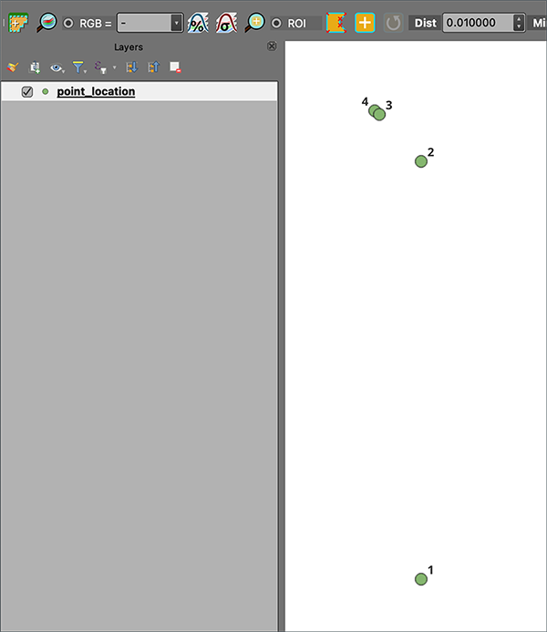
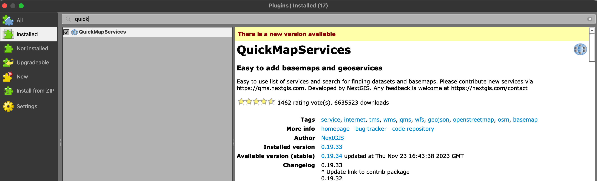
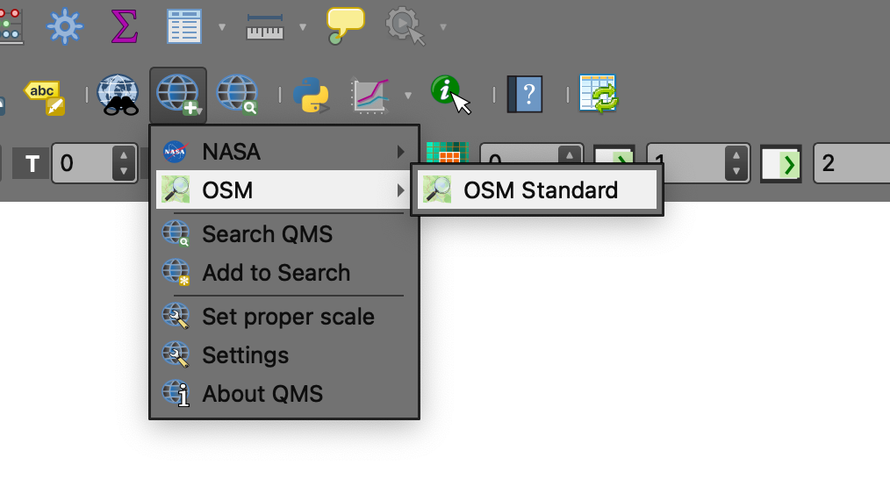
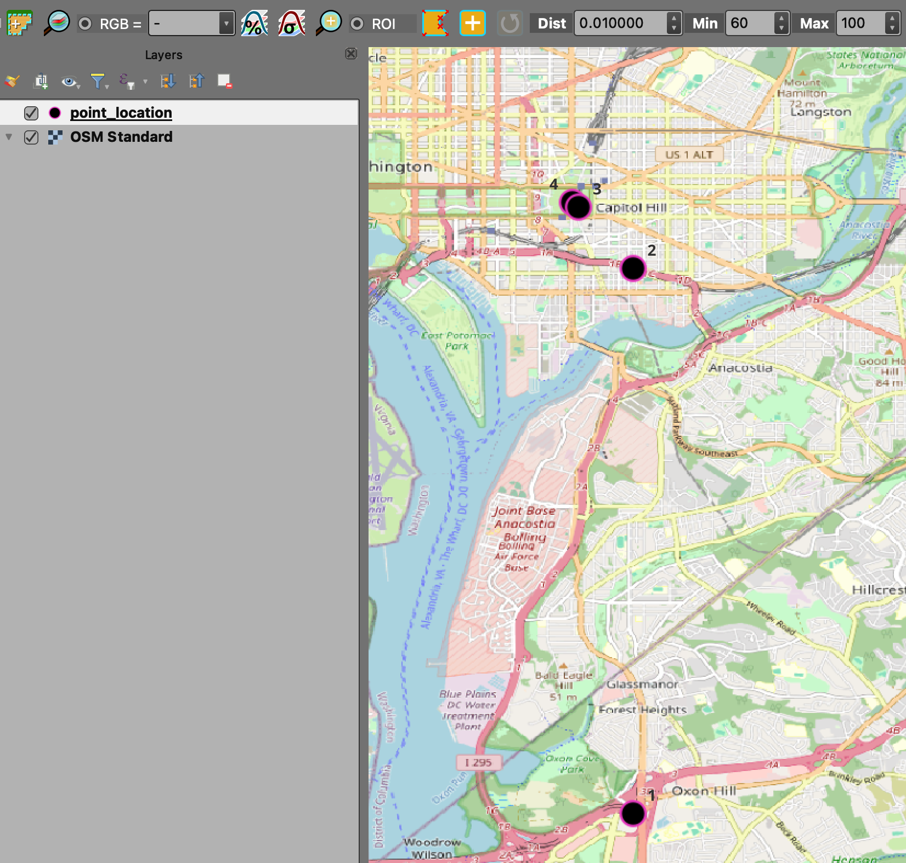
Utilize the following video to guide through steps 1-7 above:
Part II: global scale - lat/lon | QGIS Interface
- To start the Part II, download the following data, unzip to a secure directory on your machine and double-click the
.qgsfile thus opening the project.
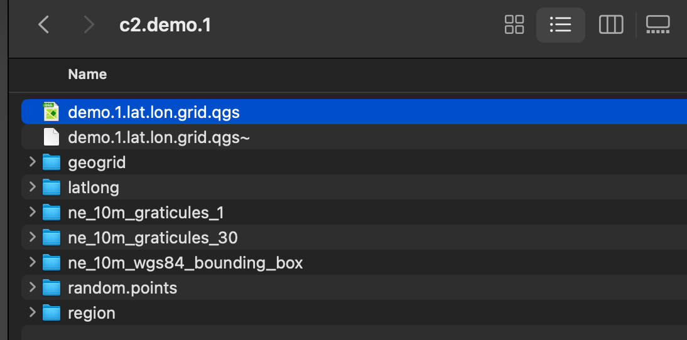
.qgs project file- Once open, explore the various significant lines of Latitude and Longitude; graticules of various sizes; a series of random points against this global framework. By Default, QGIS will open all data into a default CRS known as
EPSG: 4326which translates as theWGS84World Geodedic System.
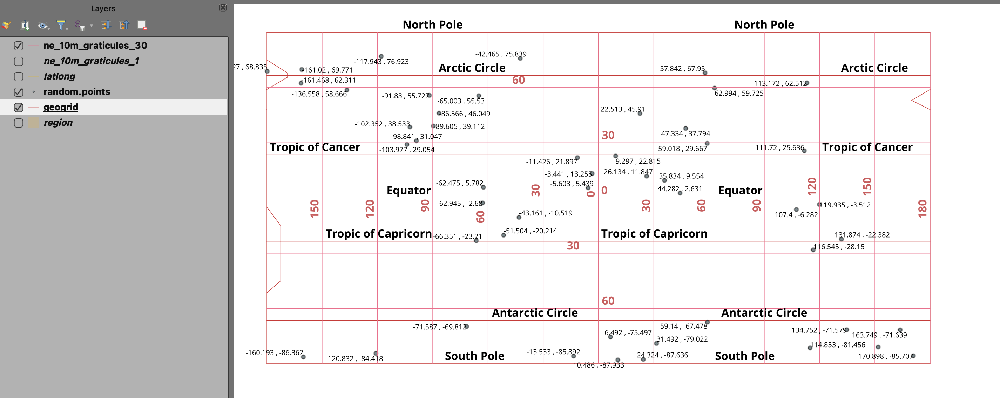
.qgs project file features loaded to QGISUtilize the following video to guide through steps 1-2 above:
Part III: FIRMS fire points - delimited text > spatial points > county counts > determine density of fire points
- To start, download the following data and establish a stable directory location, unzipping the compressed file. Once uncompressed, find the
c2.demo2.qgsfile and double-click to open in QGIS
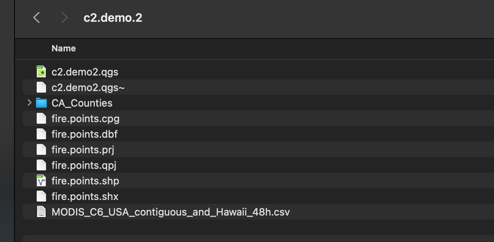
.qgs data- Once open in QGIS, the FIRMS fire points and the California Counties polygons will be needed in order to first derive a count of points per county, then calculate a comparable density per county.
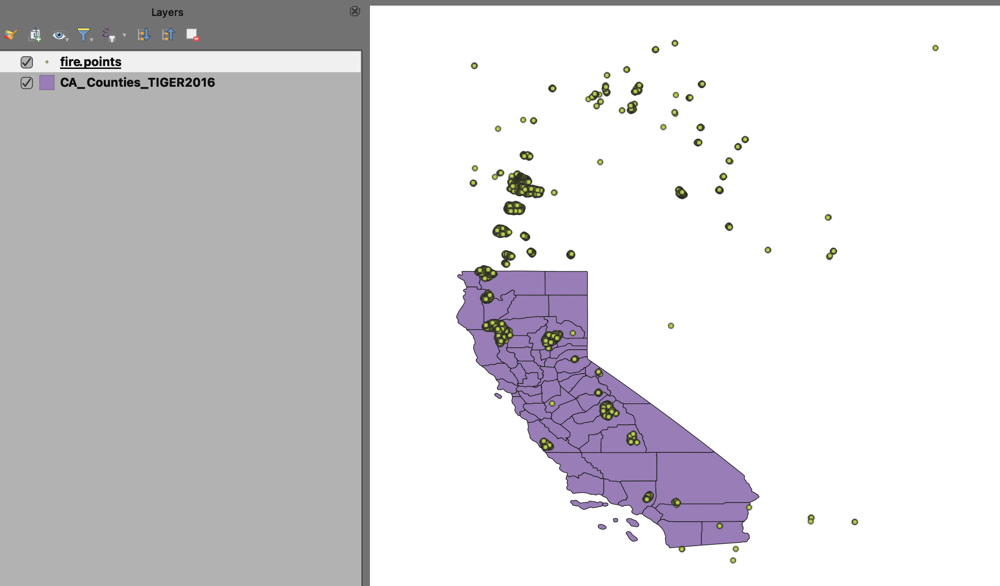
.qgs project file features loaded to QGISTwo attributes of note include the
bright_t31of the fire points; thelatitudeandlongitudeof the fire points; and in the California Counties polygon feature theALANDattribute which gives the area of land (not including waterbodies) per county as measured in square meters.Next, derive a count of points per polygon utilizing the respective QGIS processing tool entitled
count points in polygon. Set the proper inputs for the tool, and clickRunwhich results in a new temporary vector feature entitledCOUNT. OpenCOUNTand note the new columnNUMPOINTS- this is the absolute count of points per county polygon. Note that some counties of course have no fires whereas others contain many.
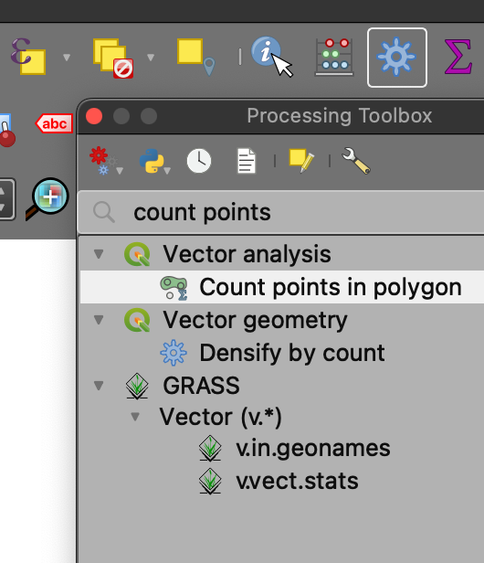
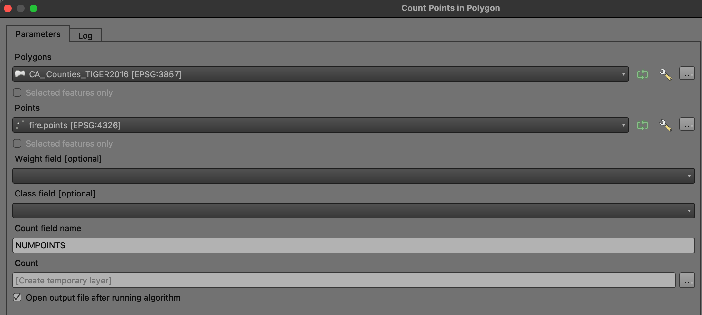
- Next, as
COUNTis a temporary file, export the this file to your directory for the project asCount_calculated.shpby first right-clicking the layer in the layers panel, proceeding to save it. Once saved, it will import the new.shpinto the layers panel. You can then remove the temporaryCOUNTlayer altogether. As saved, you now have editing options available as default on this particular vector feature, and chances that you make to the file can now take effect without worrying about the temporary state of the previousCOUNTlayer.
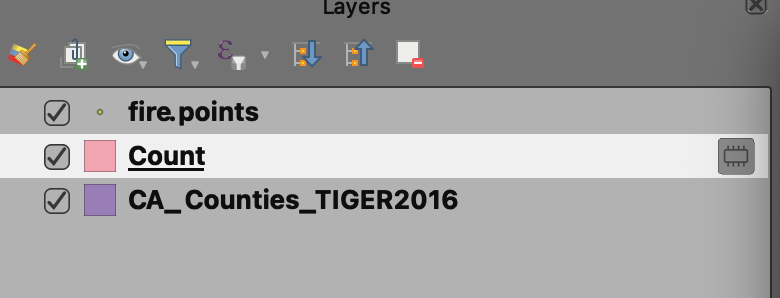
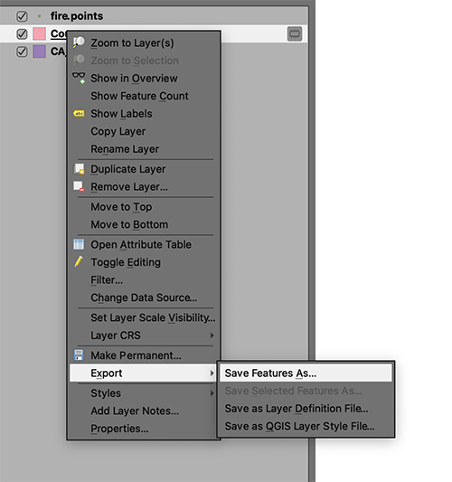
right-click layer > Export > Save Features As...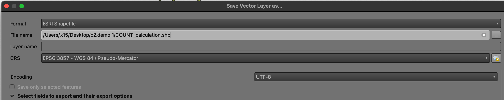
- Open the attribute table for the newly saved layer and proceed to the Field Calculator tool via the abacus icon:
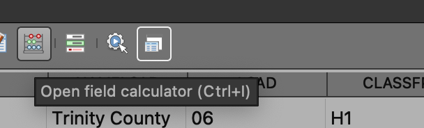
- Once open, create a new field titled as
sq_mi, number type as a real number (decimal number). Once done, points to the attribute fieldALANDand use the following calculation factor to transform the given sq meters ofALANDto square miles in the newsq_micolumn:
Calculation Factor Square Meters to Square Miles:
3.861e-7SQ_MILE Value = SQ_METER Value * 0.0000003861"ALAND"*0.0000003861
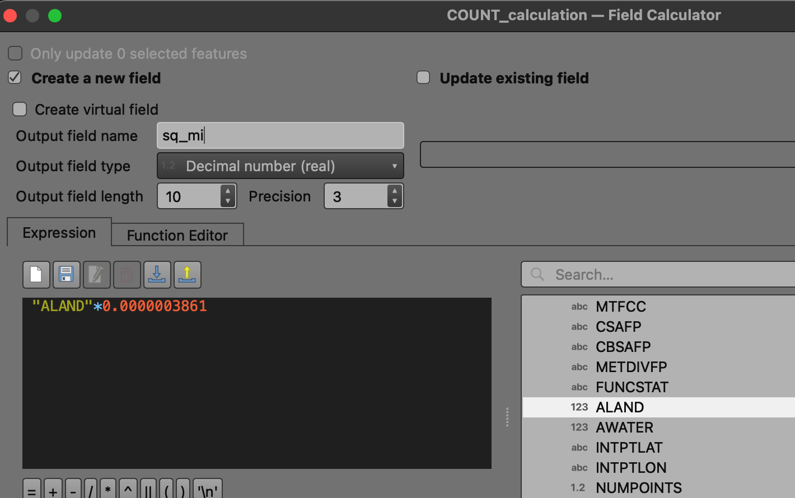
- Open the attribute table again, and note that indeed the new column
sq_mifeatures the size of each county polygon, but this time measured as square miles. This measurement is much more appropriate to the size of counties and gives us a better final density value than square meters would accomplish. The next formula is one of division where the nominator will be theNUMPOINTSand the denominator will be the columnsq_mi. In QGIS Field Calculator, the formula is as follows for a new column with number type real number (decimal number) namedfire_den:
NUMPOINTS/sq_mi
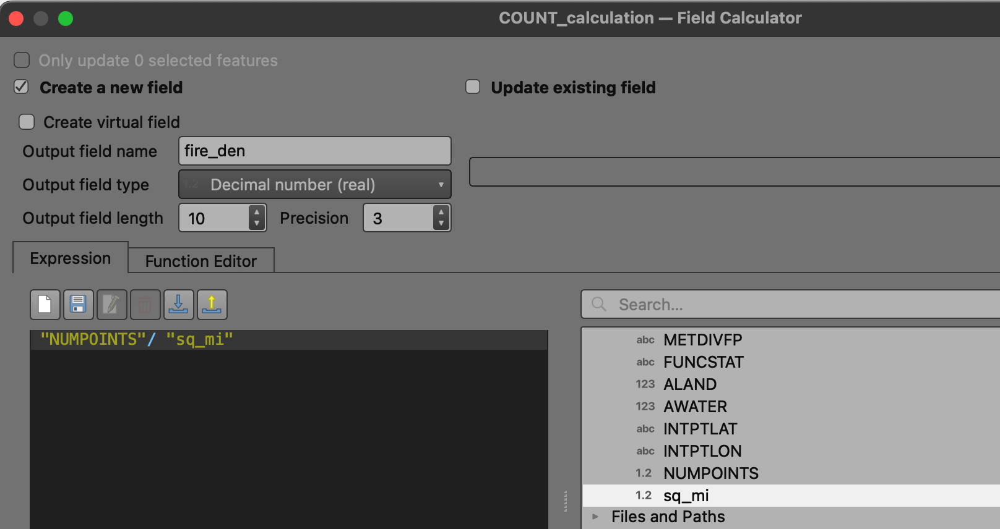
- While
sq_miis certainly more appropriate than square meters as a unit of measurement, we can go one step further and apply a multiplication factor of 10, 100, 1000, 10,000 ect. to make the number further accessible to the map user. In this case, the density expression Number of fires per 100 square miles makes good sense. To do this, create a new column as above, name itFD_100and this time as number type integer applying the following formula:
fire_den*100
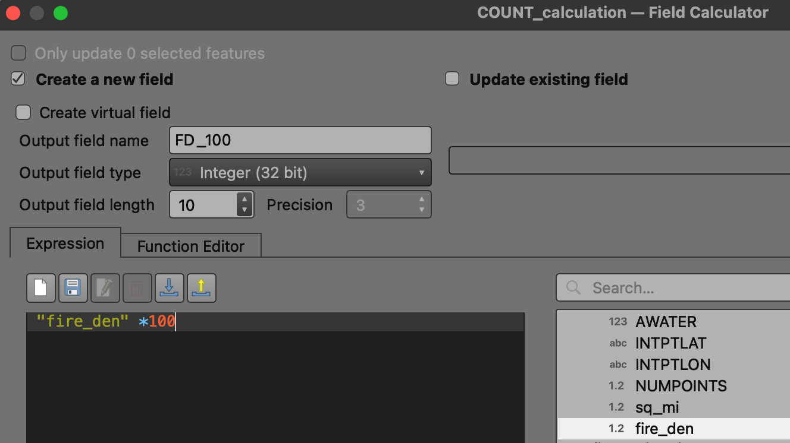
As a result, we now have a number of fires that has been normalized by geographic unit (100 square miles); and we also have the absolute count of fires per county polygon. Whereas Trinity County has the the most fires on a absolute count basis, its Butte County which has the densest concentration of fires based on its total square area.
Of final note, as we have been working within the attribute table for the layer
COUNT_calculationwe have been in an editing mode, i.e. we are altering the layer by adding new fields and applying calculation therein. As we do this, note that there is a pencil icon at the layers panel for the layer. To complete and clear out of editing mode, right-click the layer in the layers panel and choose Toggle Editing then Save. This will update the vector feature to the latest edits above.
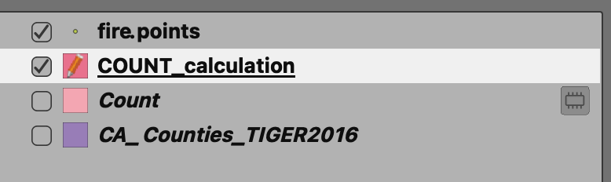
Utilize the following video to guide through steps 1-11 above:
Concluding Remarks
In this second demonstration lab, we explored the formatting and utilization of latitude and longitude points within QGIS. In the assignment this week, you will utilize delimited text at the Data Source Manager to map your NYC 311 complaint record locations. You will then proceed to deriving both a total count as well as determining density per NYC borough. Both Part II and Part III above can be useful in understanding the fundamentals of both processes in assignment 3.